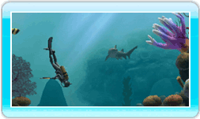

In de menu’s gebruik je de aanwijzer van de Wii-afstandsbediening om opties en knoppen te selecteren. Druk op de A-knop om de aangeduide optie te selecteren.
Terwijl je speelt, kan je de zwemrichting en schietrichting bepalen met de aanwijzer van de Wii-afstandsbediening.
Houd de B-knop van de Wii-afstandsbediening ingedrukt om te zwemmen.
Druk tweemaal op de B-knop van de Wii-afstandsbediening om jezelf een zetje te geven.
Druk op de A-knop van de Wii-afstandsbediening om met uw wapen te schieten.
Druk naar rechts op de richtingsknop om de kaart te raadplegen en uw positie te zien.
Druk naar links op de richtingsknop om de lantaarn in en uit te schakelen.